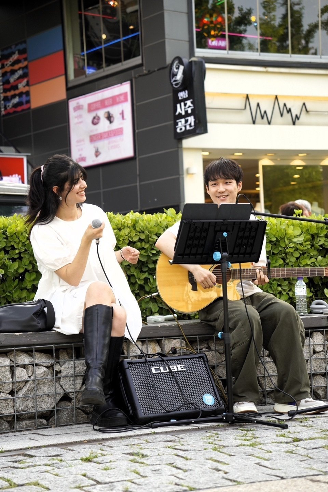
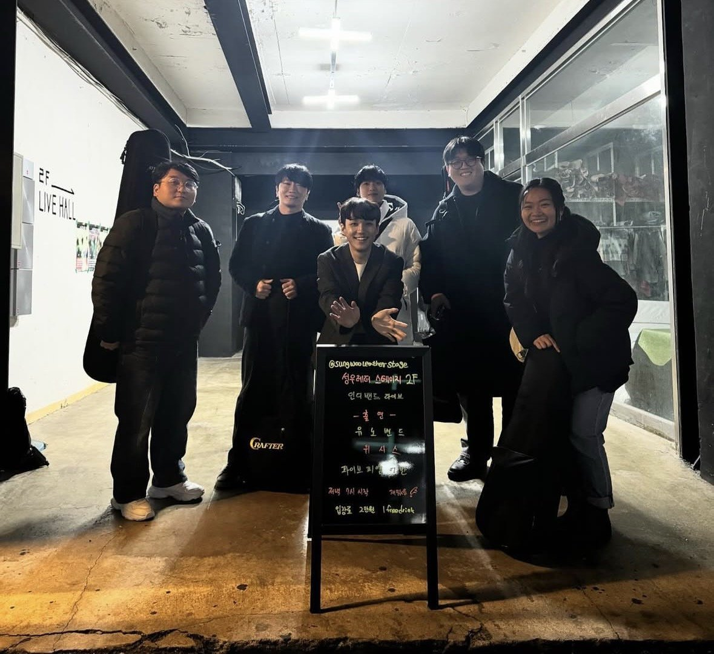
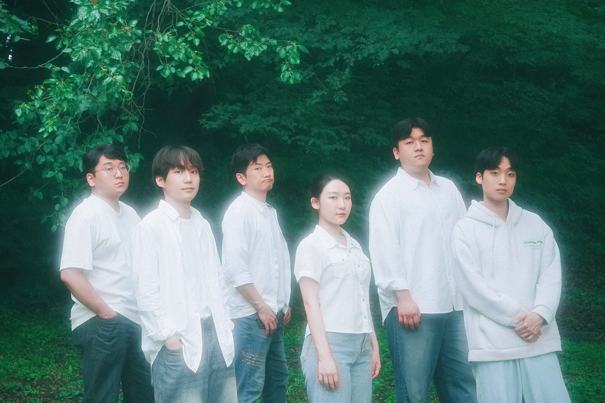

Diversity
I am an only child – but I have six “siblings”. They are the members of the underground band that I started eight years ago. After jamming (I am a guitarist) for years for other bands, I finally decided to start my own along with my buddies of eight years – a drummer and a bassist.

Since then, every Friday and more often than not on Saturdays, we got together to practice and prepare for gigs and busking (close to 1,000) with the songs I wrote and sang as well (I am also the vocalist).
Likewise, we literally lived together as we shared meals (mostly ramen) and often stayed up nights, grabbing quick naps in between.
We became brothers – a family.

But like any family, disagreements, conflicts and arguments, we had many, especially because, except for our shared love for music, we are all very different: an MIT-educated Brazilian saxophonist, a Vietnamese-Australian who plays the viola and a down-to-earth French guy who is also a vocalist.
Yes, we are a multicultural band. But we are also different in other ways. Occupation-wise, we have a chef, programmer, reporter and even a bartender.
Listening across differences
Looking back, this was (and still is) my excellent DEI classroom, and I applied the lessons learned when volunteering for so many diverse teenagers as a counselor and a mentor. Their stories were incredibly varied; teenagers with ADHD, those raised by a single parent, multi-ethnic teenagers struggling with identity and discrimination, and North Korean refugee-teenagers. And some grown-ups I worked with were just as diverse, coming from Mongolia, India, Congo, Uganda, and Brazil to name just a few.
Along the way, if there is one thing I´ve learned, it's that DEI starts with careful, attentive listening. Take the refugee kids, for instance, all they wanted was someone who would sit by their side and just listen, because who would dare to say that they understand all the cruelty they experienced? ´
I also stand for mixing pot rather than the melting pot because it is precisely because of the difference that they are unique. Thus, I encourage my band members to be who they are.

But more than anything, love is what matters. It is that love that encourages us to get along to attain our shared goal (love of music, for instance).
Love is what can mix what seemed like oil and water in the beginning, I realized.